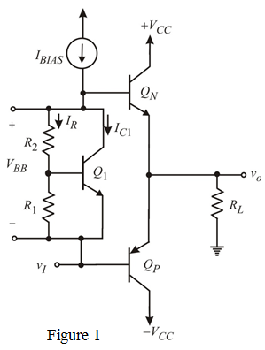

Step 1:
The class AB output stage utilizing a  multiplier for bias is shown in Figure 1.
multiplier for bias is shown in Figure 1.

The bias circuit consists of transistor  with a resistor connected between base and emitter and a feedback resistor
with a resistor connected between base and emitter and a feedback resistor connected between collector and base. The resulting two-terminal network is fed with a constant current source . Neglect the base current of
connected between collector and base. The resulting two-terminal network is fed with a constant current source . Neglect the base current of  , then and
, then and  carry the same current , given by the following equation:
carry the same current , given by the following equation:
…… (1)
Step 2:
The voltage across the bias network is,
…… (2)
…… (3)
The value of in equation is determined by the portion of that flows through the collector of.
…… (4)
…… (5)
Step 3:
The peak positive output current is
A quiescent current
The base current of  will be
will be
Substitute , for  in the equation.
in the equation.
So the base current of  can be as high as.
can be as high as.
Therefore, select the base current is
Providing the multiplier with a minimum current of
Step 4:
The quiescent conditions , then neglect the base current of
, then neglect the base current of  .
.
Now we must decide the current to be divided between 
If  is selected greater than , the transistor is almost cut-off at the positive peak of
is selected greater than , the transistor is almost cut-off at the positive peak of . Hence the select .
. Hence the select .
From the equation (4), the leaving current is
Substitute and in equation.
Obtains a quiescent current of in the output transistors;
Consider  and be matched with . Now, voltage
and be matched with . Now, voltage  is,
is,
Step 5:
From the equation 2,

is,
……. (6)
 at a collector current of .
at a collector current of .
A small geometry transistor for  with
with  .
.
From the equation (5) , it is clear that is,
Step 6:
The resistor  value can be determined as, using Ohm’s law
value can be determined as, using Ohm’s law
Therefore, the biasing resistance is
Step 7:
From equation (6), the resistor value is,

Therefore, the value of  is
is